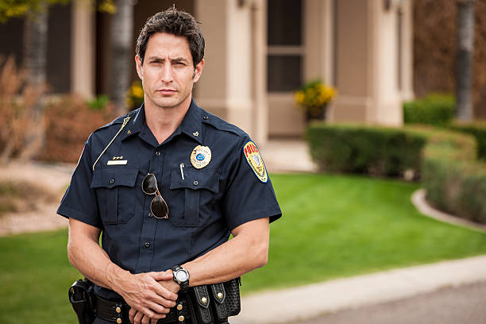

The cops?? How did they get here so quickly
 The cops see the situation and quickly react
GET ON THE GROUND. AND PUT YOUR HANDS UP
NO.. HE WAS COMING AFTER ME I WAS JUST-
DO AS YOUR TOLD NOW
I get on the ground. I'm handcuffed and taken into custody. I get sentenced to life
The End-----------------------------------------------------------
Wow what a twist. Why you gotta stab the man though.
Route Choosen: Meh. You were making good decisons. Until you didn't. Sucky route, sucky ending.
Score: 40/100
Backstory: 80% complete (wow look at that you were almost done too)
But hey.. let's try again. Hopefully you're not dumb enough to make bad choices again.